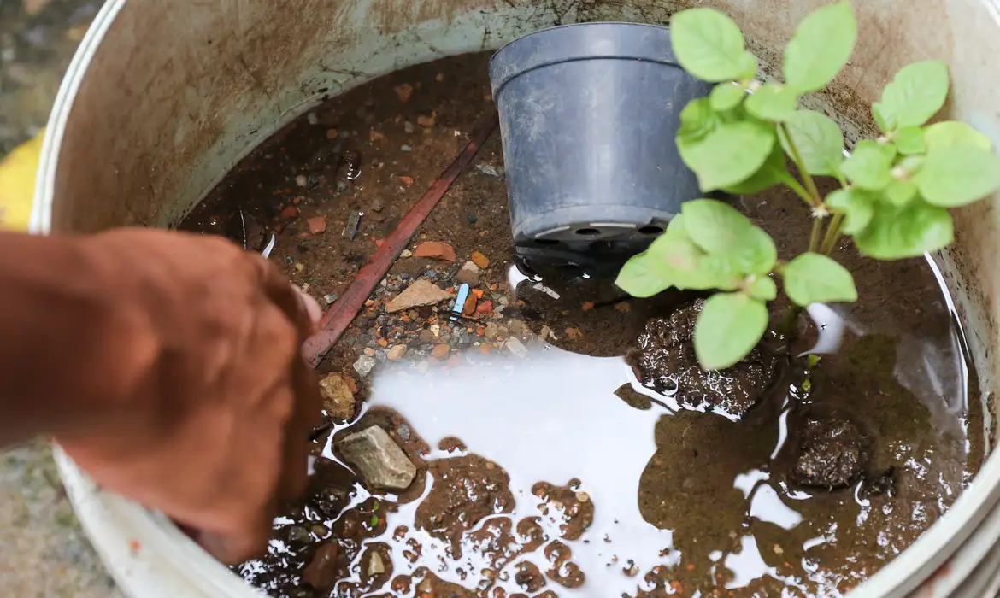
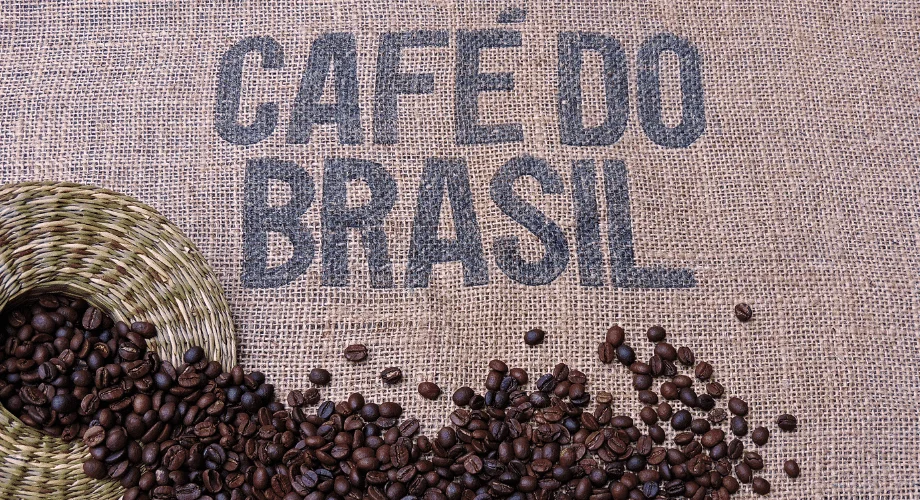

Inicio
Antes de iniciar o dia/noite, Lembre-se:a jornada de mil milhas começa com um único passo. Faça de cada momento uma oportunidade para crescer e conquistar.

"Faça o teu melhor, na condição que você tem, enquanto você não tem condições melhores para fazer melhor ainda." Mário Sérgio Cortella - Filósofo, escritor, educador e professor universitário.
Tecnologia👨💻
YouTube testa novo formato de anúncios🎬
O YouTube está testando um novo formato de anúncios que promete ser menos intrusivo para os usuários. A plataforma está buscando melhorar a experiência do usuário e aumentar a eficácia dos anúncios ao mesmo tempo.
- Anúncios menores e menos disruptivos durante a reprodução de vídeos
- Opção para os usuários pularem os anúncios após alguns segundos
- Foco em anúncios relevantes e personalizados com base no histórico do usuário
Algumas características-chave desse novo formato incluem:
Essa mudança faz parte de uma série de atualizações que visam manter a competitividade do YouTube em um mercado em rápida evolução. Com a crescente concorrência de outras plataformas de streaming e redes sociais, o YouTube precisa encontrar um equilíbrio entre gerar receita de anúncios e oferecer uma experiência agradável aos usuários.
O novo formato de anúncios do YouTube é uma tentativa de melhorar a aceitação dos anúncios entre os espectadores, ao mesmo tempo em que continua a fornecer oportunidades para os criadores de conteúdo e anunciantes. Embora ainda esteja em fase de teste, essa iniciativa sinaliza uma evolução na abordagem do YouTube em relação à publicidade, priorizando a satisfação do usuário e a eficácia dos anúncios.
Ainda bem que pensaram em nós... Imagina assistir um video do seu interesse e aparecer um anúncio de 1 minuto sem aparecer a opção pular o anuncio? rsrs
Bolsa de Valores📈
Wall Street Fecha em Queda
As bolsas de valores em Wall Street fecharam em queda nesta segunda-feira (7), com o S&P 500 e o Nasdaq recuando sob o peso de ações do setor de tecnologia. O índice Dow Jones Industrial Average caiu 0,13%, para 34.965,37 pontos, enquanto o S&P 500 perdeu 0,66%, para 4.455,33 pontos, e o Nasdaq Composite cedeu 1,02%, para 13.705,13 pontos.
As ações da Apple, Microsoft, Amazon, Nvidia e Meta Platforms lideraram as perdas, com quedas entre 1% e 2%. O setor de tecnologia do S&P 500 caiu 1,2%, sendo o pior desempenho entre os 11 principais setores do índice.
Investidores ficaram cautelosos após os ganhos recentes e aguardam novos sinais sobre a trajetória da política monetária do Federal Reserve (Fed). Dados econômicos mistos, com um relatório de empregos acima do esperado, mas uma confiança do consumidor abaixo do previsto, também contribuíram para a volatilidade.
Apesar da queda no fechamento, o S&P 500 ainda acumula ganhos de 0,4% em agosto, após uma valorização de 3,4% em julho. O Nasdaq sobe 0,6% no mês, após uma alta de 4,2% no mês anterior.
Em resumo, as bolsas de Nova York recuaram nesta segunda-feira, com o setor de tecnologia liderando as perdas, em meio a cautela dos investidores e dados econômicos mistos. No entanto, os principais índices ainda mantêm ganhos acumulados no mês de agosto.
SAÚDE🧬
Brasil ultrapassou a marca de 5 mil mortes por dengue em 2024
O Brasil ultrapassou a marca de 5 mil mortes por dengue em 2024, com um total de 5.008 óbitos registrados até o momento. Este número representa um aumento alarmante em relação ao ano anterior, quando foram contabilizadas apenas 1.164 mortes. Além disso, o país já reportou mais de 6,4 milhões de casos prováveis da doença, com os estados de São Paulo, Minas Gerais e Paraná sendo os mais afetados.
Em Bauru, no interior de São Paulo, a situação é um pouco mais otimista, pois a cidade registrou o menor crescimento de casos desde fevereiro deste ano. Apesar disso, Bauru ainda enfrenta desafios, com 1.045 casos confirmados e 1.790 notificações em investigação. A letalidade em casos prováveis de dengue no Brasil é de 0,08%, e 2.137 mortes estão sob investigação.
As autoridades de saúde estão intensificando as campanhas de conscientização e prevenção, destacando a importância da eliminação de criadouros do mosquito Aedes aegypti, transmissor da dengue. A situação crítica da dengue no Brasil ressalta a necessidade urgente de medidas eficazes para controlar a propagação da doença e proteger a saúde pública.
O Brasil enfrenta uma grave epidemia de dengue em 2024, com mais de 5 mil mortes registradas. Enquanto Bauru apresenta uma desaceleração no crescimento de casos, o país como um todo continua a lutar contra a disseminação da doença, exigindo ações de prevenção e controle mais robustas.
Política💬
Café + Europa
As exportações brasileiras de café estão enfrentando desafios significativos devido ao aumento das tensões políticas e econômicas na Europa. A instabilidade na região, impulsionada por fatores como a guerra na Ucrânia e a inflação elevada, tem gerado preocupações sobre a demanda por produtos agrícolas brasileiros, especialmente café e soja.
Os dados indicam que as exportações de café caíram 17% em julho de 2024 em comparação com o mesmo mês do ano anterior, refletindo a diminuição do consumo na Europa, que é um dos principais mercados para o produto. Além disso, o setor da soja também está em alerta, pois a Europa representa um mercado importante para as exportações brasileiras. A expectativa é que, se a situação econômica na Europa não melhorar, a demanda por esses produtos agrícolas possa continuar a diminuir.
Os especialistas alertam que a combinação de fatores como a alta nos custos de produção, a instabilidade política e a possibilidade de recessão na Europa pode impactar negativamente as exportações brasileiras, afetando a rentabilidade dos produtores e a economia do setor agrícola como um todo.
Em resumo, as exportações de café do Brasil estão sendo afetadas por uma queda na demanda europeia, resultante de tensões políticas e econômicas na região. O setor da soja também enfrenta riscos semelhantes, levantando preocupações sobre a sustentabilidade das exportações agrícolas brasileiras em um cenário de incerteza econômica.
Extra:
A quarta-feira pode ser o dia perfeito para dar uma pausa na rotina e se conectar com você mesmo. Para te ajudar a aproveitar ao máximo esse dia, separei algumas dicas:
- Marque um jantar com amigos🍻: Compartilhe momentos agradáveis e fortaleça seus relacionamentos.
- Banho relaxante🛁: Crie um ambiente calmo com velas e música suave, e mergulhe em uma banheira com sais de banho.
- Leitura de um bom livro📚: Perca-se em uma história e deixe a imaginação fluir.
- Música relaxante🧘♂️: Crie uma playlist com suas músicas favoritas e relaxe.
- Participe de um grupo de interesses🏂: Conecte-se com pessoas que compartilham seus hobbies.
- Faça uma videochamada com familiares🤳: Mantenha contato com quem você ama, mesmo à distância.❤️
E o mais importante de tudo🤗: